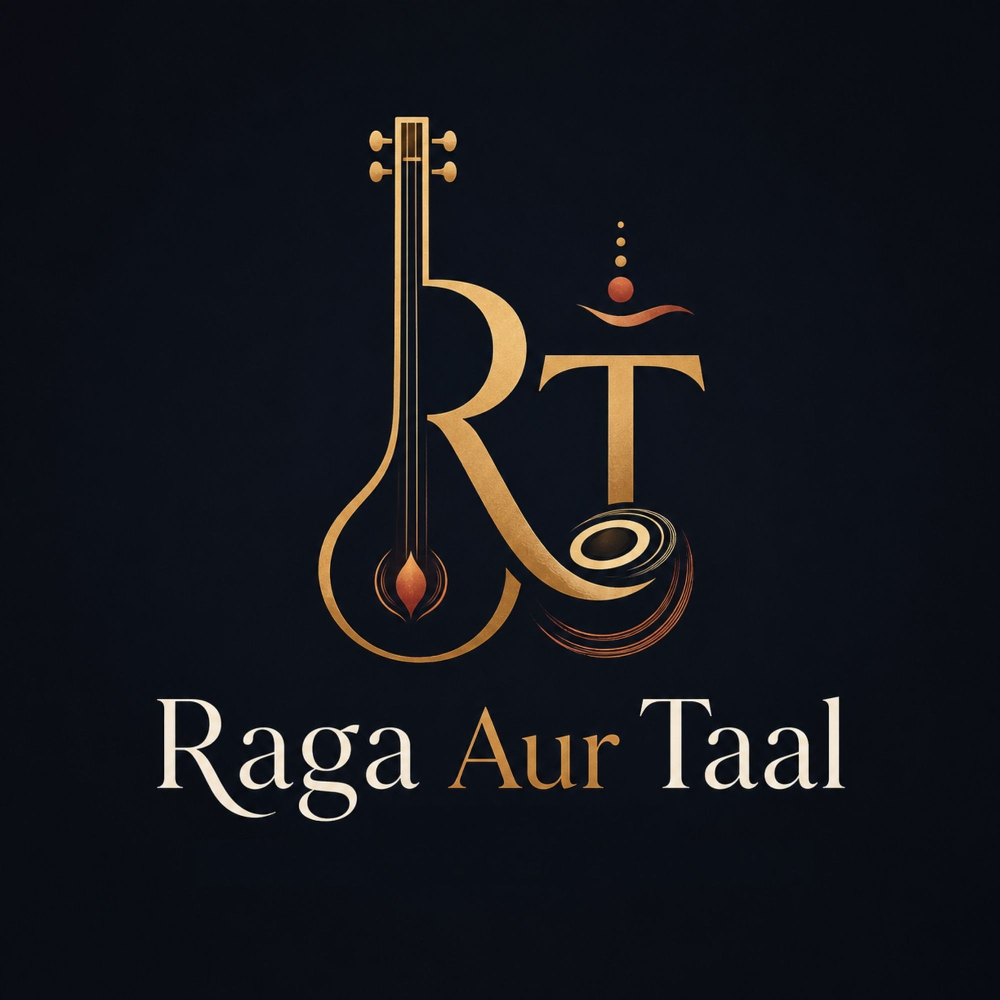

Recordings Archive
Concert clips, bhajans, harmonium pieces, practice recordings, and special performances organized with context.

Raga Aur TaalClassical Music • Bhajans • Devotion
A modern archive for recordings, devotional music, student learning, and reflections from Krish’s journey through Indian classical music.
Concert clips, bhajans, harmonium pieces, practice recordings, and special performances organized with context.
Simple explanations of raag, taal, sargam, shruti, laya, alap, bandish, and other Indian music concepts.
A bhajan library with lyrics, meanings, taal notes, and learning resources for students and families.
Featured Recording
Use this area to feature the latest YouTube video, recital, or bhajan. Each recording can include lyrics, meaning, raag, taal, credits, and practice notes.
Bhajan Library
Build a searchable devotional library that helps families learn not only how to sing a bhajan, but what it means.
Ganesha
Simple call-and-response songs with clear taal counts and easy harmonium support.
Sai
Bhajans organized by theme, tempo, language, deity, and difficulty level.
Meaning
Short explanations of bhakti, seva, sharanam, ananda, and other words children hear often.
Learn Indian Music
Krish’s ABGMVM Journey
Document the practical side of learning Indian classical music: daily riyaz, exam preparation, theory notes, recordings, and reflections after each level.
Prarambhik
Praveshika
Madhyama
Visharad
Follow Along
Add newsletter signup, YouTube channel links, upcoming recordings, and contact information here.